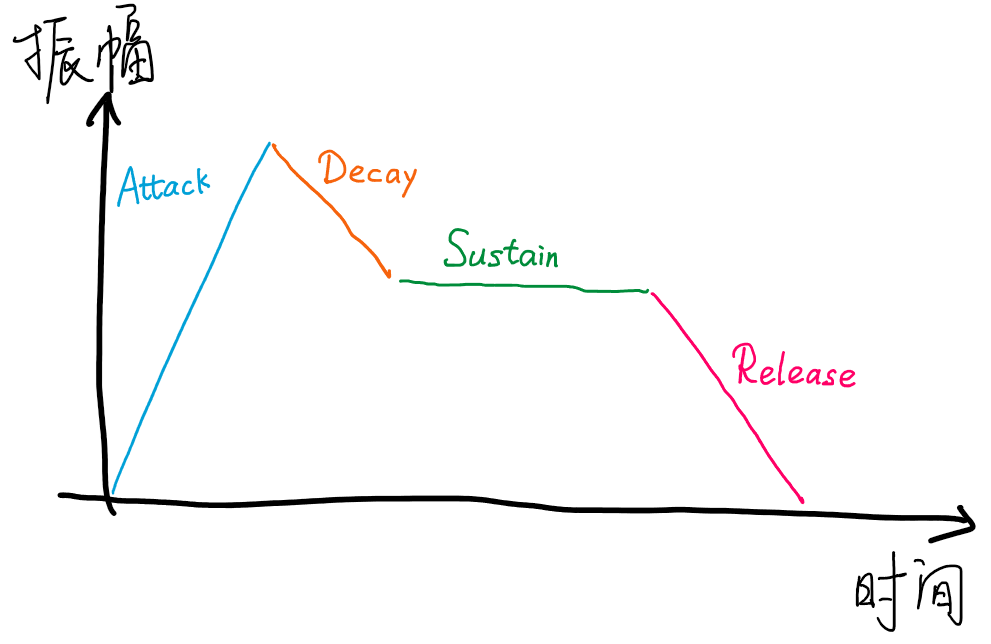
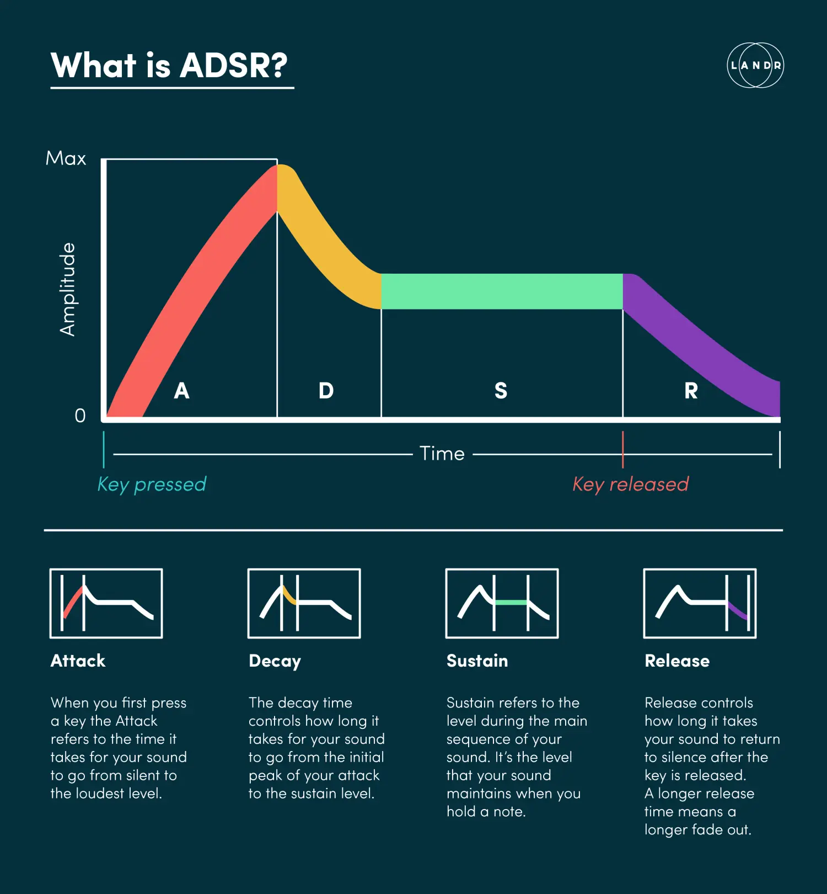
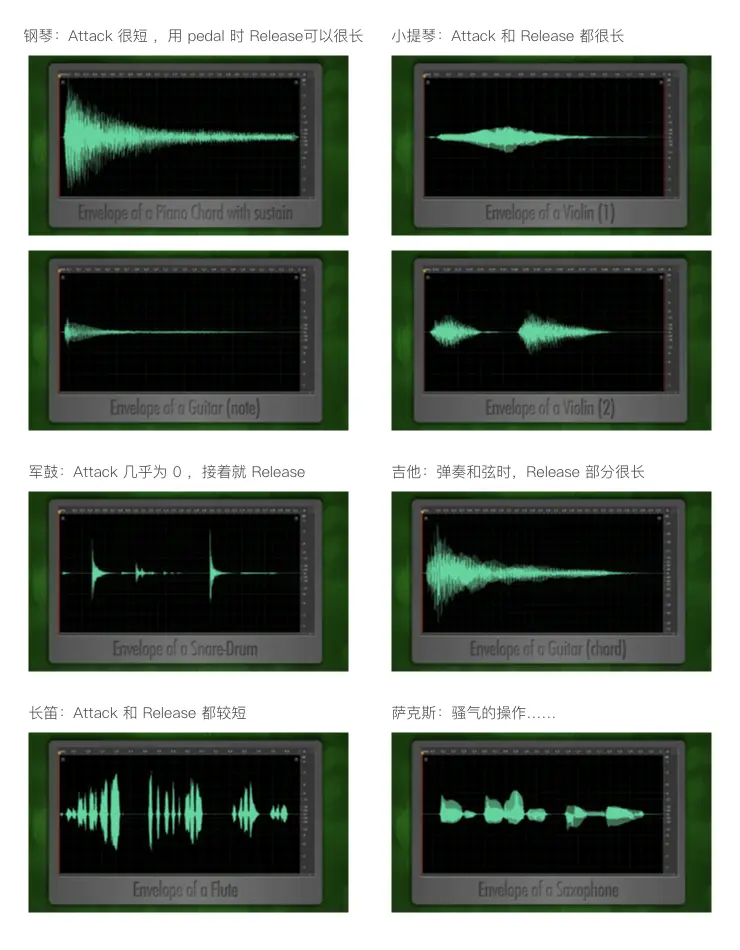

基本乐理
ADSR包络
声音从无到有，从有到无，都需要经历过渡变化阶段
声音从无到有的时间被称为上升时间(Attack Time)，声音从有到无的时间被称为释放时间(Release Time)，振幅慢慢减小的时间叫做衰减时间(Decay Time)，对于能够持续发生的乐器，在D与R之间用保持时间(Sustain Time)来描述



自然调式
自然大调:
全全半全全全半
自然小调:
全半全全半全全
音名频率对照表
| 记号 | 音名 | 频率(Hz) |
|---|---|---|
| C2 | 16.4 | |
| #C2 | 17.3 | |
| D2 | 18.4 | |
| #D2 | 19.5 | |
| E2 | 20.6 | |
| F2 | 21.8 | |
| #F2 | 23.1 | |
| G2 | 24.5 | |
| #G2 | 26 | |
| A0 | A2 | 27.5 |
| #A0 | #A2 | 29.1 |
| B0 | B2 | 30.9 |
| C1 | C1 | 32.7 |
| #C1 | #C1 | 34.6 |
| D1 | D1 | 36.7 |
| #D1 | #D1 | 38.9 |
| E1 | E1 | 41.2 |
| F1 | F1 | 43.7 |
| #F1 | #F1 | 46.2 |
| G1 | G1 | 49 |
| #G1 | #G1 | 52 |
| A1 | A1 | 55 |
| #A1 | #A1 | 58.3 |
| B1 | B1 | 61.7 |
| C2 | C | 65.4 |
| #C2 | #C | 69.3 |
| D2 | D | 73.4 |
| #D2 | #D | 77.8 |
| E2 | E | 82.4 |
| F2 | F | 87.3 |
| #F2 | #F | 92.5 |
| G2 | G | 98 |
| #G2 | #G | 103.8 |
| A2 | A | 110 |
| #A2 | #A | 116.5 |
| B2 | B | 123.5 |
| C3 | c | 130.8 |
| #C3 | #c | 138.6 |
| D3 | d | 146.8 |
| #D3 | #d | 155.6 |
| E3 | e | 164.8 |
| F3 | f | 174.6 |
| #F3 | #f | 185 |
| G3 | g | 196 |
| #G3 | #g | 207.7 |
| A3 | a | 220 |
| #A3 | #a | 233.1 |
| B3 | b | 246.9 |
| C4 | c1 | 261.6 |
| #C4 | #c1 | 277.2 |
| D4 | d1 | 293.7 |
| #D4 | #d1 | 311.1 |
| E4 | e1 | 329.6 |
| F4 | f1 | 349.2 |
| #F4 | #f1 | 370 |
| G4 | g1 | 392 |
| #G4 | #g1 | 415.3 |
| A4 | a1 | 440 |
| #A4 | #a1 | 466.2 |
| B4 | b1 | 493.9 |
| C5 | c2 | 523.3 |
| #C5 | #c2 | 554.4 |
| D5 | d2 | 587.3 |
| #D5 | #d2 | 622.3 |
| E5 | e2 | 659.3 |
| F5 | f2 | 698.5 |
| #F5 | #f2 | 740 |
| G5 | g2 | 784 |
| #G5 | #g2 | 830.6 |
| A5 | a2 | 880 |
| #A5 | #a2 | 932.3 |
| B5 | b2 | 987.8 |
| C6 | c3 | 1046.5 |
| #C6 | #c3 | 1108.7 |
| D6 | d3 | 1174.7 |
| #D6 | #d3 | 1244.5 |
| E6 | e3 | 1318.5 |
| F6 | f3 | 1396.9 |
| #F6 | #f3 | 1480 |
| G6 | g3 | 1568 |
| #G6 | #g3 | 1661.2 |
| A6 | a3 | 1760 |
| #A6 | #a3 | 1864.7 |
| B6 | b3 | 1975.5 |
| C7 | c4 | 2093 |
| #C7 | #c4 | 2217.5 |
| D7 | d4 | 2349.3 |
| #D7 | #d4 | 2489 |
| E7 | e4 | 2637 |
| F7 | f4 | 2793.8 |
| #F7 | #f4 | 2960 |
| G7 | g4 | 3136 |
| #G7 | #g4 | 3322.4 |
| A7 | a4 | 3520 |
| #A7 | #a4 | 3729.3 |
| B7 | b4 | 3951.1 |
| C8 | c5 | 4186 |
| #c5 | 4434.9 | |
| d5 | 4698.6 | |
| #d5 | 4978 | |
| e5 | 5274 | |
| f5 | 5587.7 | |
| #f5 | 5919.9 | |
| g5 | 6271.9 | |
| #g5 | 6644.9 | |
| a5 | 7040 | |
| #a5 | 7458.6 | |
| b5 | 7902.1 |
本博客所有文章除特别声明外，均采用 CC BY-NC-SA 4.0 许可协议。转载请注明来源 Minai の blogs！